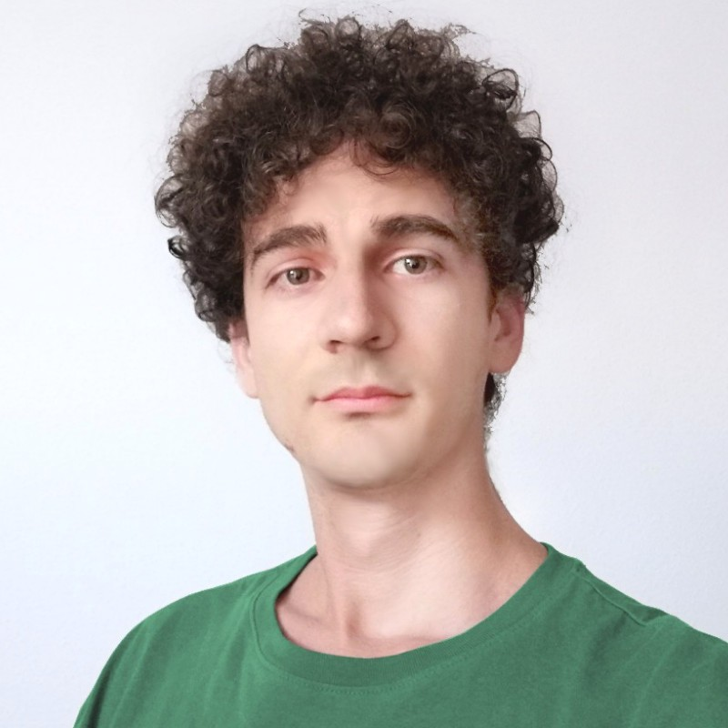

C++ / OpenGL / Vulkan 3D Game Engine
https://github.com

Adrian EgeaC++ Unreal Engine 5 Porting GAS Consoles Systems Gameplay Vulkan OpenGL
Software Engineer & Game Developer (Computer Science degree) with over 9 years of experience specializing in Unreal Engine 5 and Modern C++ (17/20/23) and passionate about creative projects. My strongest skills are patience and creativity, they allowed me to become self-taught gamedev, code my own Vulkan Game Engine and take part in multiple AA/AAA Unreal Engine projects like Lords of the Fallen (2023, PS5, XSX, PC) and Gothic Remake (2026 PS5, XSX, PC). I am also capable to cooperate with a team in an extremely high pressure environment and fast learner. I’ve joined projects in different stages like pre-release, mid production, and greenfield projects.
Radical Dreams Entertainment 株式会社 Japan (Remote) Feb 2026 – Present
GRIP Studios Czech Republic (Remote) Apr 2025 – Jan 2026 (10 months)
Underdog Studio (CI Games) Barcelona, Spain (Remote) Mar 2024 – Oct 2024 (8 months)
HexWorks (CI Games) Barcelona, Spain (Remote) Aug 2021 – Mar 2024 (2 years 8 months)
Alkimia Interactive (THQ Nordic) Barcelona, Spain (Remote) May 2020 – Jul 2021 (1 year 3 months)
Limitless Games Barcelona, Spain Apr 2018 – Mar 2020 (2 years)
Cl3ver Barcelona, Spain May 2017 – Apr 2018 (1 year)
Tretanto Murcia, Spain Feb 2015 – Apr 2016 (1 year 3 months)
Nov 2017 – Present C++ OpenGL Vulkan GLSL
3D Game Engine to refine C++, OpenGL, Vulkan, and GLSL skills.
C++ / OpenGL / Vulkan 3D Game Engine
https://github.com
Jul 2013 – May 2017 JavaScript WebGL GLSL
End-of-degree project focusing on Component-System architecture using JavaScript, WebGL, and GLSL.
JavaScript + WebGL 2D Game Engine
https://github.com
Apr 2016 – Jul 2016 Java LibGDX State Machines Flocking Pathfinding (A*) Steering Behaviors Game AI
University project implementing AI for video games in Java/LibGDX, including state machines, flocking, pathfinding (A*), and steering behaviors.
Game AI Project
https://github.com